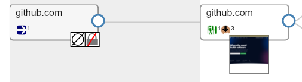
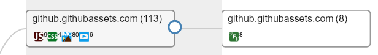

Usage
Before You Begin
Before you start using lookyloo, you should be familiar with a few concepts, otherwise it won’t make much sense.
Capture a website
This is the entry point when you want to investigate a website.
URL
The only required field is the URL, which is the URL you want to capture. It might be the index page of the domain to capture:
Or a more complete URL:
Referer
The referer is optional but it must be a full URL if you want to use it.
Usecase: some websites block requests if they’re not initiated by an internal URL. If that’s the case, pass the required URL in the referer field.
Note: It may not be enough and the wensite may also require a cookie. If it is the case, see below.
Proxy
The proxy is optional but it must follow the format provided in the field if you want to use it.
Usecase: some websites block requests if they’re not initiated from a specific country, or IP block. If that’s the case, you can pass a proxy to the capture.
Note: You need to setup your own proxy server, or you can use tor as a socks5 proxy.
If you use tor with the default configuration, the socks5 proxy will only be listening
on 127.0.0.1, which is not accessible from splash because is running in a docker package.
In order for it to work, the easiest way is to make tor listening on every interfaces
by adding SocksPort 0.0.0.0:9050 in /etc/tor/torrc, restart tor, and then you can pass
socks5://<IP_of_your_host>:9050 in the proxy field of Lookyloo.
If it doesn’t work, try opening http://<IP_of_your_host>:9050 in your browser. You should
have a notification from tor telling you it is a socks5 proxy and not an http proxy.
If you don’t have that, something is incorrect with your tor configuration .
Cookies
It will be empty by default, but please refer to the related documentation in order to initiate a new capture with a pre-refined cookie.
Browser configuration
By default, lookyloo passes a relatively common user-agent when it captures a page. You can change it by picking the type of operating system and the browser type in the dropdown boxes. The user-agent used in the one in the last dropdown menu (this one will be used by default).
You can also pass the user-agent of your own browser by ticking the box.
Note: If your browser has a very special user-agent, it may leak information about you.
Note: If you want to pass a very specific user-agent for the capture, you can change your user-agent in the parameters of your browser and reload the page.
Depth
It is not enabled by default because it will most of the time take too long on most websites. The default depth is 1 (capture only the given URL).
If you enable the feature, a value of 2 will capture the given URL, extract all the links in the page, pick all the ones with the same hostname as the initial URL, and capture them. As you can imagine, it may get huge very fast.
Investigate a capture
As a general statement, if something in unclear, you should move your mouse over the part of the section that doesn’t make sense, and it should display a text giving some explanations. If it doesn’t, please get in touch with us, or keep reading this page.
Nodes
Simple example with the initial URL github.com.

-
The node with a thumbnail of the screenshot is the page as it would be displayed in your browser (after all the redirects). Click on the image to see the screenshot fullscreen.
-
This node contains one single URL, the content of the response is an HTML page
-
The response from the server has 3 cookies

-
In order to get to the landing page, we went from a unencrypted URL (http) to an encrypted one (https)
-
The initial response was empty, it generally means that the redirect was made by the server directly (3XX HTTP code)

-
The landing page loads resources from two different hostnames (
github.githubassets.comandavatars.githubusercontent.com) -
113 resources are loaded from
github.githubassets.com(9 javascript, 4 CSS, 80 images, 6 videos) -
24 resources are loaded from
avatars.githubusercontent.com(all images)

-
some of the URLs in the node
github.githubassets.comare themselves loading content from URLs ongithub.githubassets.com(8 fonts). It will most probably come from the CSS in the parent node.
In order to investigate it further, we can click on each of the hostnames and open an investigation popup, more on that below.
Hostnode popup
Clicking on the first node github.githubassets.com opens the following pop-up:

-
You will see every URL aggregated in that node
-
You can do a lot of things from there:
-
Get every resource loaded from the server
-
See if they are present in other captures (correlation by hash)
-
See the HTTP status code of the response
-
Download all the URLs and hashes
-
Get the cookies received of sent for each HTTP request
-
Copy individual URLs
-
If you put pur mouse over the image icon, it will display the image
-